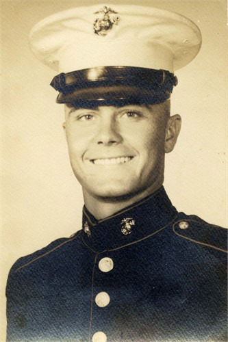
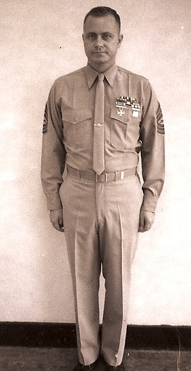
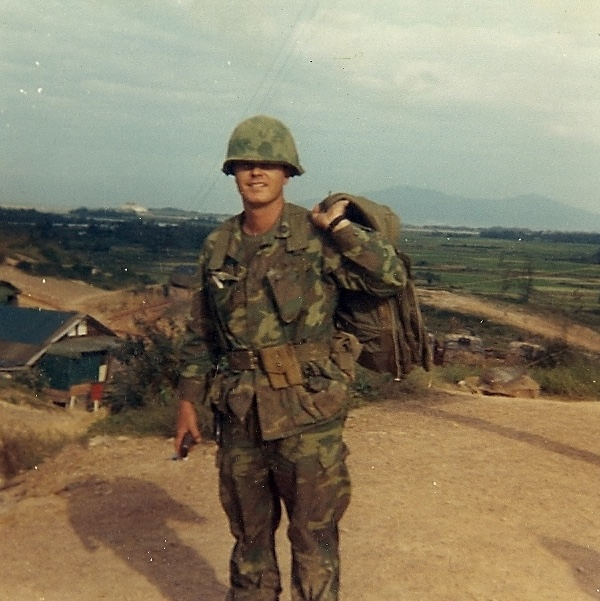
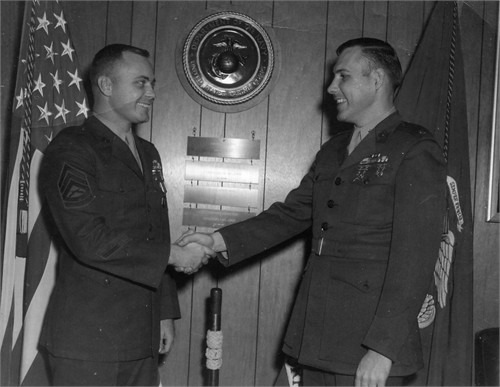
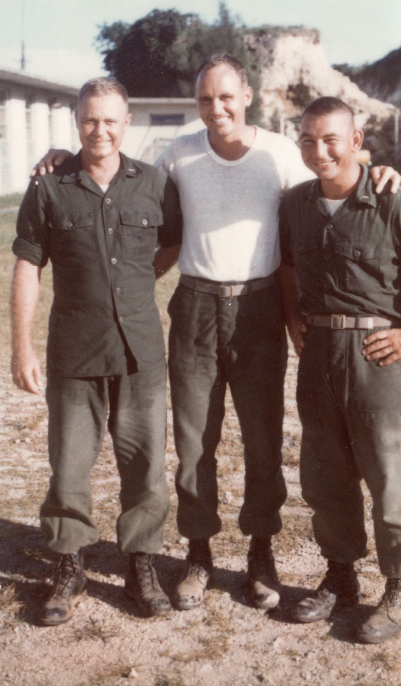

Arthur Singletary Sr.
1941–2011

Life Events
Born: February 24, 1941 — Alton, Lafayette County, Florida, United States
Died: January 7, 2011 — Gainesville, Alachua County, Florida, United States
Family
Father: Dewey Singletary
Mother: Ollie Mae Herrin
Siblings
Military Service
Branch: United States Marine Corps
Conflict: Vietnam War
Enlisted: September 9, 1960
Discharged: April 30, 1986
Biography
Arthur Singletary was born on February 24, 1941, into the Singletary and Herrin families of North Florida. His parents were Dewey Singletary and Ollie Mae Herrin.
During his early years, Arthur spent time working on the 400-acre farm owned by his maternal grandfather, William Levi Herrin. The farm was located south of Mayo, Florida, near Midway Baptist Church in Lafayette County. These experiences were part of his upbringing in rural North Florida and connected him to the family's agricultural heritage.
Arthur began his military career in September 1960 when he enlisted in the United States Marine Corps. After completing his initial four-year enlistment, he was honorably discharged on September 7, 1964.
In February 1965, Arthur reenlisted in the Marine Corps in Macon, Georgia, as a Sergeant (E-5), immediately returning to active duty. He continued advancing through the enlisted ranks and, according to family recollections, eventually attained the rank of Master Sergeant (E-8).
Arthur subsequently received a direct commission as a Second Lieutenant based on his enlisted experience, without attending Officer Candidate School. As a Marine who transitioned from enlisted service to commissioned officer status, he was known as a Mustang officer.
By July 1976, Arthur was serving as a Second Lieutenant at Marine Corps Base Camp Lejeune, North Carolina. That month, his family moved into Marine Officer Quarters (MOQ) 3160.
Throughout his military career, Arthur served in intelligence and counterintelligence assignments. His service included duty associated with the Vietnam War, specialized military education, and numerous decorations and awards, including the Navy Commendation Medal.
Arthur continued advancing through the commissioned officer ranks and retired from the United States Marine Corps on April 30, 1986, having attained the rank of Major (O-4).
Photos





Sources
-
1945 Florida State Census — Dewey and Ollie Singletary Family
Type: State CensusThe 1945 Florida State Census records Dewey and Ollie Singletary living in Precinct No. 3, Airline, Lafayette County, Florida, with their four-year-old son Arthur. Dewey was working as a laborer and Ollie was recorded as a housewife. Other members of Dewey Singletary's family, including his parents and siblings, were also living in the Airline community and appear on the same census page.
Location: Airline, Lafayette County, Florida, United States
Household Members:
- Dewey Singletary — age 25, born Florida, laborer
- Ollie Singletary — age 26, born Georgia, housewife
- Arthur Singletary — age 4, born Florida
Supports: Residence of Dewey and Ollie Singletary in Airline, Lafayette County, Florida in 1945, Arthur Singletary as a member of the household, Dewey Singletary's occupation as a laborer, Ollie Singletary's birthplace as Georgia, Arthur Singletary's birthplace as Florida
-
1950 United States Census — Dewey and Ollie Singletary Family
Type: United States CensusThe 1950 United States Census records Dewey and Ollie Singletary living in Lafayette County, Florida, with their sons Arthur and Emory. Dewey was working as an automobile mechanic.
Location: Lafayette County, Florida, United States
Household Members:
- Dewey Singletary — head, age 30, born Florida
- Ollie M. Singletary — wife, age 32, born Georgia
- Arthur Singletary — son, age 9, born Florida
- Emory D. Singletary — son, age 4, born Florida
Supports: Residence of Dewey and Ollie Singletary in Lafayette County, Florida, in 1950, Arthur Singletary as their son, Emory Dewey Singletary as their son, Ollie Mae Singletary's birthplace as Georgia, Arthur and Emory Singletary's birthplaces as Florida, Dewey Singletary's occupation as an automobile mechanic
-
Arthur Singletary Meritoriously Promoted at Parris Island
Type: Newspaper ArticleAn article published in the Tallahassee Democrat on January 30, 1961, reports that Arthur Singletary was meritoriously promoted to Private First Class on December 13, 1960, following completion of recruit training at Marine Corps Recruit Depot Parris Island, South Carolina. The promotion recognized his outstanding performance during training. The article states that Arthur enlisted in September 1960 and previously attended North Florida Junior College in Madison, Florida. It also identifies his parents as Mr. and Mrs. Dewey Singletary of Perry, Florida.
Location: Parris Island, South Carolina, United States
Supports: Arthur Singletary's service in the United States Marine Corps, Arthur Singletary's completion of recruit training at Parris Island, Arthur Singletary's meritorious promotion to Private First Class on December 13, 1960, Arthur Singletary's enlistment in September 1960, Arthur Singletary's attendance at North Florida Junior College, Dewey and Ollie Singletary as Arthur Singletary's parents